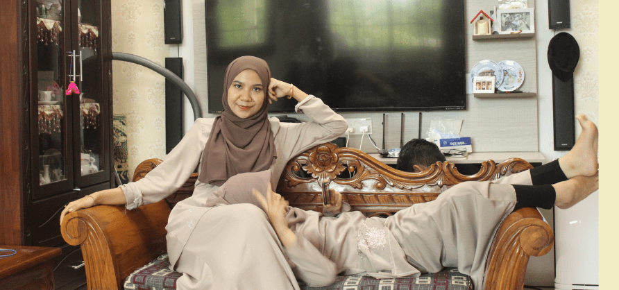

HOME
PORTFOLIO
EXPERIENCED
EDUCATION
FAMILY
GALLERY
PETS
My Personal Website
2 / 3

this is my personal website
WELCOME TO MY PERSONAL WEBSITE
KNOW BETTER ABOUT ME
Alhamdulillah, first I would like to thank Allah S.W.T. as finally, I able to
finish individual assignment that has been given. This assessment had been done with all
my afford by even though it has a little bit problem have happened. Luckily, all the
problems can be settling down and I able to adapt properly and wisely.
Besides that, big thanks to my lecturer Sir Mohd Najmie Bin Osman because without
his guidance, I cannot design our web development properly. He always gives me supports
and guides me on how to do our grouping assignment in purpose to produce a good outcome
from research that has been studied.
Last but not least, big thanks to my beloved friends, Nurfahana Syabila,
Nurul Izzah, and Muhammad Syauqi which helps me in solving all the problems and
burdens in design this web development. They gave me support and a hand to help me
when we need it.
Hence, giving our family and parent a big thank you because they understand
us while doing this assignment. They also gave us space and support in finishing
this task with concern.
Finally, im hoping this task came out with a decent element and effective marks.
I have completed this task as well as my future and my caring individuals marks.
All things considered, may Allah s.w.t will give us achievement and taking care of us.